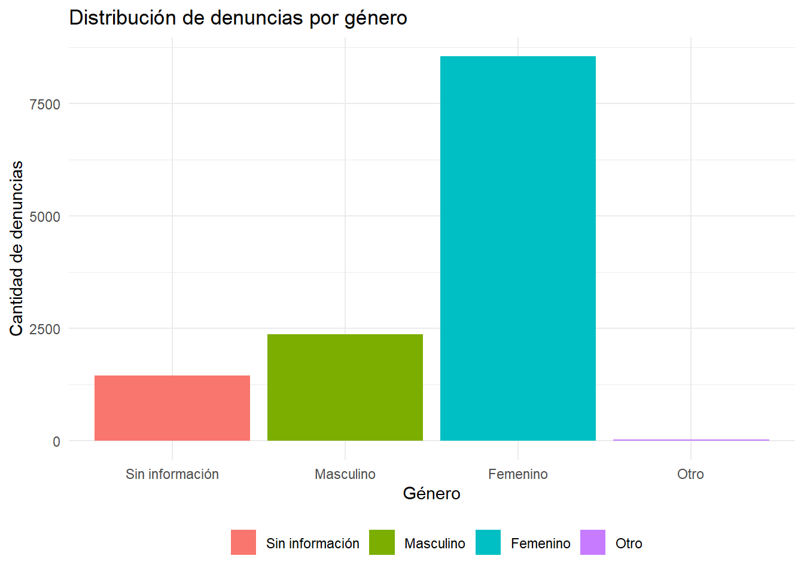
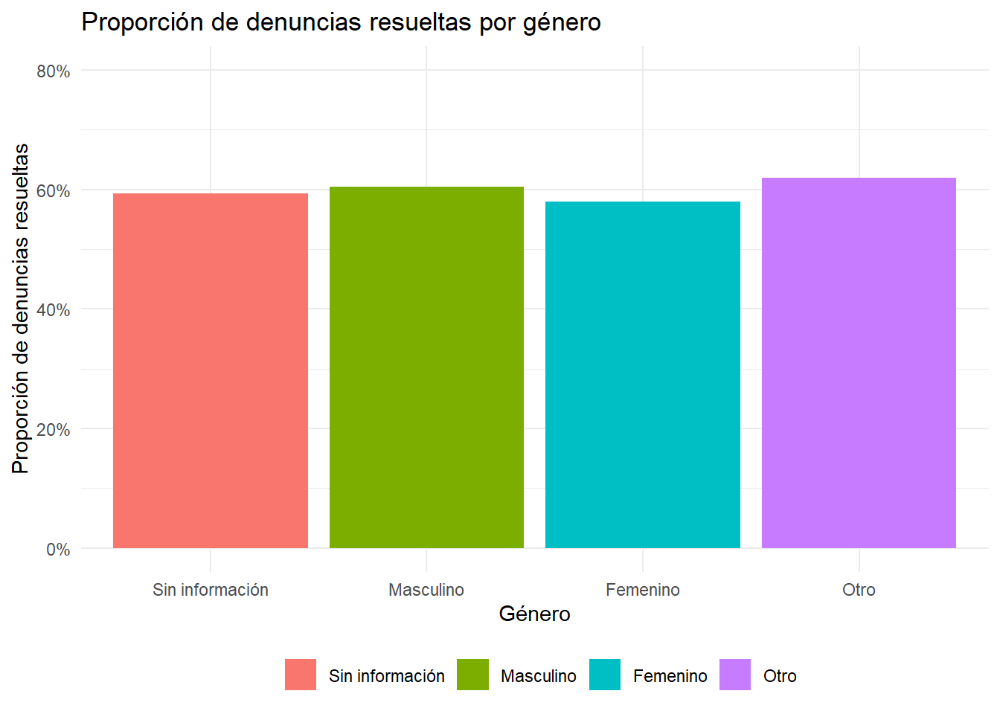

library(readxl)
library(tidyverse)
datos <- read.csv("Denuncias 2024/20240630_DENUNCIAS_2024_20240930_PUBL.csv", sep = ";")Presentación Escuela de Datos 2024
Presentación del problema
Anualmente, la Superintendencia de Educación recopila datos sobre denuncias relacionadas con el sistema educativo. Esto plantea la siguiente pregunta: ¿hay diferencias significativas en la distribución y resolución de denuncias según el género? Este análisis explora la distribución de denuncias por género en el año 2024 utilizando los datos proporcionados por la Superintendencia de Educación para dicho periodo.
Los enlaces a la base de datos y al PDF que explica las nomenclaturas de las variables se encuentran disponibles en la página Datos.Gob, el portal de datos abiertos del Estado de Chile.
Los objetivos son:
- Visualizar las tendencias de denuncias por género.
- Calcular y comparar la distribución de las denuncias por estado (Resueltas y Activas) respecto de cada género.
Justificación
El objetivo de este análisis es identificar posibles patrones de inequidad en la distribución y resolución de denuncias por género, con el fin de proporcionar evidencia que pueda guiar la mejora en el tratamiento de las denuncias por parte de la Superintendencia de Educación.
Los datos principales incluyen dos columnas/variables:
- DEN_GENERO: Indica el género de los denunciantes:
- 0 = Sin información.
- 1 = Masculino.
- 2 = Femenino.
- 3 = Otro.
- DEN_ESTADO: Indica el estado de la denuncia:
- 1 = Resuelto.
- 2 = Activo.
Código y Análisis
Paso 1: Importación de librerías y carga de datos
Carga las librerías necesarias (readxl para leer archivos Excel y tidyverse para manipulación de datos y creación de gráficos); A continuación, carga el archivo CSV con los datos de las denuncias para el año 2024 utilizando read.csv() con el separador (;), asignando los datos leídos al objeto datos.
Paso 2: Limpieza de datos
El código realiza una limpieza y validación de los datos en el objeto datos usando el paquete dplyr. Crea un nuevo data frame llamado datos_limpios, donde las columnas DEN_GENERO y DEN_ESTADO se convierten en factores con etiquetas descriptivas para sus niveles. Además, filtra las filas para eliminar aquellas donde estas columnas tengan valores NA, asegurando que los datos estén completos para estas variables.
datos_limpios <- datos %>%
mutate(
DEN_GENERO = factor(DEN_GENERO, levels = 0:3,
labels = c("Sin información",
"Masculino",
"Femenino",
"Otro")),
DEN_ESTADO = factor(DEN_ESTADO, levels = c(1, 2),
labels = c("Resuelto",
"Activo"))
) %>%
filter(!is.na(DEN_GENERO), !is.na(DEN_ESTADO))Paso 3: Visualización gráfica
El código utiliza ggplot2 para generar un gráfico de barras que muestra la distribución de denuncias por género. La función aes() asigna la variable DEN_GENERO al eje X y al color de relleno de las barras. geom_bar() crea las barras, mientras que labs() personaliza los títulos de los ejes, el título principal del gráfico, y elimina la etiqueta del relleno.
Se aplica el tema minimalista con theme_minimal(), y la leyenda se posiciona en la parte inferior mediante theme(legend.position = "bottom").
datos_limpios %>%
ggplot(aes(x = DEN_GENERO, fill = DEN_GENERO)) +
geom_bar() +
labs(
x = "Género",
y = "Cantidad de denuncias",
title = "Distribución de denuncias por género",
fill = ""
) +
theme_minimal() +
theme(legend.position = "bottom")
Finalmente, calcula y visualiza la proporción de denuncias resueltas por género. Primero, agrupa los datos por DEN_GENERO y calcula la proporción de casos donde DEN_ESTADO es igual a “Resuelto”. Luego, utiliza ggplot2 para crear un gráfico de barras con geom_col(), mostrando estas proporciones en el eje Y. La escala del eje Y se formatea como porcentaje con scales::percent y se limita al rango 0 - 0.8.
Los títulos, etiquetas y leyenda se personalizan con labs(), y el tema minimalista se aplica con theme_minimal(), ubicando la leyenda en la parte inferior, similar a la estética del gráfico anterior.
datos_limpios %>%
group_by(DEN_GENERO) %>%
summarize(proporcion_resueltas = mean(DEN_ESTADO == "Resuelto")) %>%
ggplot(aes(x = DEN_GENERO, y = proporcion_resueltas, fill = DEN_GENERO)) +
geom_col() +
scale_y_continuous(labels = scales::percent, limits = c(0, 0.8)) +
labs(
x = "Género",
y = "Proporción de denuncias resueltas",
title = "Proporción de denuncias resueltas por género",
fill = ""
) +
theme_minimal() +
theme(legend.position = "bottom")
Conclusiones
- Una mayor proporción de denuncias fueron presentadas por personas de género Femenino en comparación con el resto de géneros.
- Existe una mayor proporción de denuncias Resueltas en comparación con las Activas en todos los géneros, sugeriendo una eficiencia general en la resolución de denuncias.
- El género Otro muestra una representación significativamente menor en comparación con los géneros binarios, lo que podría reflejar una falta de categorías adecuadas para personas no binarias o una falta de datos en este grupo.